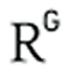

ISSN(Print): 0000-0000. ISSN (Online): 0000-0000
Why Is Scientific
Journalism
Important
to Publishers ?
Journalism
Important
to Publishers ?
Scientific journalism is more than a communication tool—it's the foundation of academic progress, professional recognition, and global knowledge exchange. For authors, publishing res
Click to Sign Up >
Read more >
Journal of Institutional Research, Big Data Analytics and Innovation
Journal of Institutional Research, Big Data Analytics and Innovation (JIRBDAI)
publishes high-quality research that explores the intersection of
data-driven...
Read more >
Indexing Outlets
Google Scholar
OpenAire

ResearchGate
Bibliometrics
Publication Years
2022 - 2025
Publication Count
85
Available for
Download
Download
200
Downloads
(cumulative)
(cumulative)
20
Downloads
(6 weeks)
(6 weeks)
20
Downloads
(year)
(year)
47
Average Citations
per Article
per Article
5
Average Downloads
per Article
per Article
53
Empowering your Publication Journey
Submit Your Paper
View all Papers -->
Latest Issue
Research Article
Free Content